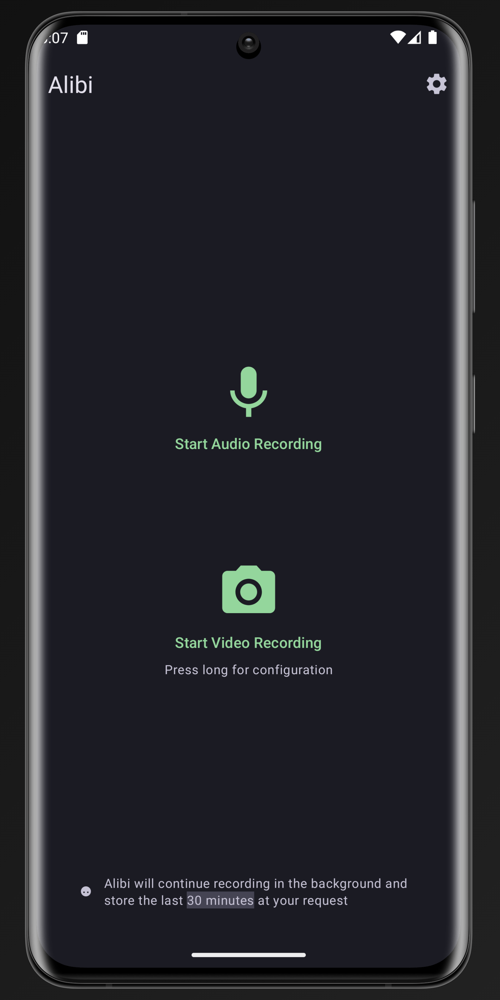

Alibi 到底算不算手机端的行车记录仪
把这款开源后台录屏录音应用放进同类对比，说说它的滚动缓冲、边录边存和权限透明到底解决了哪些真问题，又在哪些地方做了取舍。
手机端的"随身记录仪"这个类目，市面上翻来覆去就那几种玩法：要么开机即录占空间，要么手动触发漏掉关键瞬间。我自己折腾过几款之后，Alibi 是少数让我觉得"这个思路确实不一样"的——去Alibi官网看一眼就明白，它的定位从一开始就不是"又一个录音笔"，而是随时在线但不瞎存的证据留存工具。
这篇就把它放进坐标系里说说：它凭什么在同类里占一个位置，又在哪些地方故意做了减法。

同类软件的格局，它站在哪
先说这个类目的基本分野。大多数录屏录音应用走两条路：持续录制型（典型的就是自带行车记录仪功能的厂商 ROM，或者某些长录 App）和手动触发型（各类会议录音、屏幕录制工具）。前者的问题是存储空间消耗惊人——一小时 1080p 视频就是几个 G，出门一天回来手机已经红温；后者的问题更致命：你得先预判"接下来要有事发生"才能按下按钮，真正需要留证的时刻恰恰是你来不及掏手机的时刻。
Alibi 选了第三条路：滚动缓冲。它在后台一直录，但只保留最近一段时长（默认 15 分钟，可调），新内容进来旧内容自动滚出去。真正需要留的时候按一下保存，把"从某个时刻到现在"的那段从缓冲里导出来变成永久文件。没保存的内容永远不会落盘——既不漏，也不浪费。
这个思路不是它独有的，但把它做成日常能用的产品，Alibi 是我见过完成度最高的。
它做得比别人好的三个点
第一，边录边存的长按手势，真的解决了一个没人好好解决的场景
我在其他同类应用里遇到过的最大尴尬：想保存一段内容，但保存动作本身会中断录制。比如开车遇到剐蹭，你想把刚才的过程保存下来，但一按保存，录制就停了——可理论上你还想继续录对方下车、跟你理论的全过程。
Alibi 的解法是一个长按手势：单击保存 = 保存并停止，长按保存 = 保存并继续录制。长按之后，应用在后台合并处理刚才的缓冲片段，前台服务继续录新的内容，时间轴不会断。这个设计看似只是一个交互细节，但背后是它对"证据链连续性"的理解——真正的留证场景里，中断本身就是信息损失。
素材文档里提到这个功能在 v0.5.0 加入，从那之后就没被拿掉过。我用了几个月，这个长按手势已经变成肌肉记忆了。

第二，权限清单干净到近乎洁癖
一款"一直在后台听你说了什么"的应用，它的权限清单应该长什么样？我见过太多同类应用把通讯录、定位、网络权限一股脑要上——理由是"方便分享""云端备份"，但本质上你根本不知道它拿去干了什么。
Alibi 的权限清单里没有定位、没有通讯录、没有电话状态、没有网络相关权限堆砌。核心只有四项：相机、录音、通知（Android 前台服务要求）、存储（用于另存文件）。听起来吓人的那几条——比如"捕获音频输出"——逐条解释下来也都是录音链路的系统级权限，不是"偷听别人"的后门。
这份干净的清单不是巧合，是开源项目的底气：每一条权限都能在源码里对应到具体功能，没有黑箱。对一款你可能在敏感场合打开的应用来说，这点比任何功能都重要。
第三，设置的整包导入导出
这个功能看起来不显眼，但用过就回不去了。我换机比较勤，以前每次换手机都要花十分钟把录屏录音的参数一项项重调：码率、画质、保存时长、批次文件夹、通知样式……Alibi 允许你把全部设置序列化成一份 JSON 文件，旧手机导出、新手机导入，几秒钟搞定。
它还明确告诉你两个边界：备份的是设置不是录像（已保存的音视频文件要按普通文件搬运），跨版本兼容不承诺（导入后扫一眼关键参数）。这种"说清楚做什么不做什么"的产品态度，比那些假装全能的应用靠谱得多。
它的取舍：为这些优势付出了什么
说了三个好的，也得说它故意没做的事。
平台限制是硬伤。它只有 Android，没有 iOS。原因很简单：iOS 的后台机制根本不允许应用持续录音录像——这不是 Alibi 不想做，是苹果的沙盒架构从根上就堵死了这条路。Android 用户直接从下载拿 APK 就行。iPhone 用户如果想找同类，目前没有真正对等的选项，只能退而求其次用手动触发型的工具。
界面极简到功能藏得深。主界面只有两个大按钮加一个齿轮，看着清爽，但一些进阶操作的入口比较隐蔽——比如长按保存的手势，如果没人告诉你，大概率自己摸索不出来。设置里还有一个默认关闭的"高级设置"开关，打开才露出格式、编码器这些参数。对新手友好度来说，它选择了"界面少就是美"的路线，代价是首次使用翻一下Alibi文档就好。
没有云端功能。它不做自动上传、不做云备份、不做远程访问。这和它的权限哲学是一致的——你所有的录像录音都留在本地，不会经过任何服务器。但反过来，如果你希望"录完自动同步到网盘"，就得自己搭链路，它不帮你。
选购结论
说了这么多，到底谁该用它？
如果你经常遇到"需要留证但不确定什么时候发生"的场景——开车通勤、街头采访、线下维权、甚至只是想在会议里随时能保住刚说的一段话——Alibi 的滚动缓冲 + 边录边存是目前手机端最顺手的方案，没有之一。它帮你省掉了"预判什么时候按按钮"这件不可能完成的任务。
如果你只是偶尔需要录一段会议或课程，那它可能偏重了。系统自带的屏幕录制或录音应用加上手动触发，对低频场景完全够用，没必要专门装一个后台常驻的应用。
如果你是 iPhone 用户，不用等了，生态限制决定了它不会来 iOS。退一步找手动触发型的工具吧，这是目前的最优解。
最后给一句明确的推荐：Android 用户、有随身留证需求、在意隐私干净——Alibi 值得装一次，设置好之后就放在后台，它会在你需要的那一刻帮上忙。
这套资料在 GitHub、Gitee、GitCode 三个仓库都能拿到，方便不同网络环境的人查阅和镜像。开源项目的好处就是这样——你不信某一个源，总还有别的地方能验证。